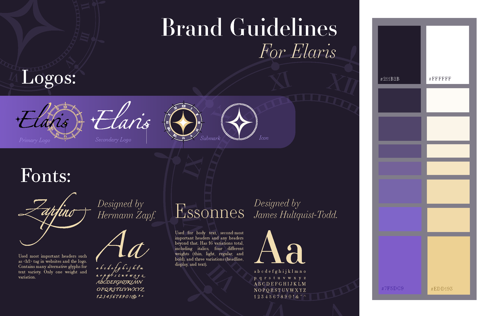

Hello there! ☆
I'm Mars! I create digital graphic design pieces with strong consideration to emotions. I am particularly drawn to graphic design because I want others to feel the ideas I’m so drawn to. I have strong, intense emotions about concepts I create, strong enough to struggle to verbalize these concepts, and my work became a way to express that.
My creative process usually starts with a vision board and a long-form document where I excessively write about my concept, sometimes thousands of words. Rather than visually planning, I typically dive right in after brainstorming to let the process unfold as I create. This blend of structure and spontaneity helps me stay connected to the emotional core of every piece I make. Utilizing a multimedia approach with the Adobe Suite for graphic design and character illustration, HTML and CSS for website development, and watercolor for traditional pieces, I usually make book covers, websites, flyers, posters, postcards, and anything meant to convey information, especially if they need a creative hand.
Thank you for visiting my website, and I hope you enjoy my work! Below, you can preview a few of my most recent pieces.


